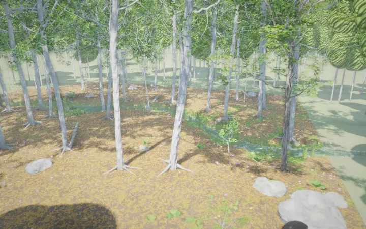

(M)orders of Magnitudeone world, five sizes
Each rung gets ten times more room than the one before, and has to fit in it whole. There are no pictures or 3D models inside, only rules and, at the top, the measured Earth: a forest at first, then the real world, measured and alive, from quarks to the cosmic web. Click any rung’s fill bar to see what its bytes are spent on. Start at the bottom and climb.
How big is a kilobyte?
A byte holds one letter. A kilobyte (kB) is a thousand bytes, about half a page of a book; a megabyte (MB) is a million, about a long novel. Each rung is ten times the one before, so the top one holds ten thousand times what the bottom one does. Each square below is drawn with an area in proportion to its rung’s allowance.
- 0.2 kB200 bytes
- A text message and a bit (one holds 160 letters)
- More than the Atari 2600 console’s whole memory: 128 bytes
- 2 kB2,000 bytes
- A page of a paperback
- The Gettysburg Address, with room to spare
- Combat, the game packed in with the Atari 2600, on its 2 kB cartridge
- 20 kB20,000 bytes
- A short story
- The original Pac-Man arcade game: 16 kB of program
- 200 kB200,000 bytes
- A short novel (The Great Gatsby is about 270 kB)
- One floppy disk of the first IBM PC: 160 kB
- Five copies of Super Mario Bros. (40 kB each)
- 2 MB2,000,000 bytes
- A little more than a 3½-inch floppy disk (1.44 MB)
- Less than one photo from your phone (2 to 5 MB)
- Less than a typical web page today (about 2.5 MB)
- Two minutes of a song as an MP3
For scale, a phone that holds 128 GB could hold sixty-four thousand copies of the top rung.
 Step in ↗
Step in ↗
0.2 kB One formula
Eighty firs fading into mist, from one loop. Each tree’s size, height and paleness come from its number in the line.
99.0% full · 198 of 200 bytes, about one text message ·
<canvas id=c width=900 height=500><svg onload="for(q=c.getContext`2d`,i=0;i<80;i++)for(q.fillStyle=`hsl(120,15%,${90-i}%)`,j=28;j--;)q.fillRect(i*i*7%900-(w=(j%4+j/4)*(s=i*i/500))/2,240-i+j*s,w,s)"> Step in ↗
Step in ↗
2 kB One shader
Every pixel works out which tree it falls on. Ten rows of conifers, birches and oaks, sun shafts with dust in them, leaves falling, and now and then a deer.
83.5% full · 1,670 of 2,000 bytes, about a page of a paperback ·
Try
- Just watch. It drifts sideways forever, and the deer is in no hurry.
 Step in ↗
Step in ↗
20 kB A genome and a grammar
Real 3D. Trees grown branch by branch from a genome, with moss where the rain runs, shadows, fog, wind and birdsong.
99.8% full · 19,960 of 20,000 bytes, a short story ·
Try
- Switch forests, then Reseed for a new one. No two are the same.

Step in ↗200 kB The measured Earth, seen coarser
The real-Earth forest: every animal, every age, every scale, grown on the climate of anywhere you click. The Earth is measured in 300 km squares.
97.6% full · 195,154 of 200,000 bytes, a short novel ·
Try
- Tap Fallen leaf on the scale at the right and fall 100,000 times smaller, a window at a time
- Places → Anywhere on Earth, then click where you grew up
 Step in ↗
Step in ↗
2 MB The living Earth, from quarks to the cosmic web
The real Earth from its measured maps: ground and sea floor, lakes, climate, and real trees where they grow, under the Sun, Moon and stars where they are right now, with its cities’ real lights on the night side. The Moon, Mercury, Venus and Mars from their own maps, the giants to their cloud tops. Herds, hares, hawks, fish and whales that are born, compete, evolve and die; trees that grow, seed and fight for light and water; weather and snow that build through the year. Zoom from the quarks in a grain of sand out past the Milky Way to the cosmic web without one cut, with synthesised sound, and through a wormhole at the Earth’s L4 point to six invented worlds.
99.1% full · 1,981,412 of 2,000,000 bytes, less than one photo from your phone ·
Try
- Open Go to… at the bottom right: a real place on Earth, the Moon, Mars, or a giant’s cloud tops. You arrive wherever the Sun now stands nicely
- Look at a tree to read its name: a real species, of a genus that grows there
- Use time of day… and month… at the bottom right to see the same place at sunrise, at midnight, or in another season
- Point at an animal to read who it is: its name, age, generation and how its genes differ from its ancestors’. Then set ten years a second (the time button, or ]) and watch the herd and its hunters rise and fall, and the gaps in the forest fill. What you have seen is still there next visit
- Go to the boreal forest of Quebec, pick month… March, and walk on the snow; fly up to see the flocks; swim off a coast to see the schools and what hunts them
- Fly low and keep scrolling into the ground: past grains and crystals down to atoms and quarks. Scroll back out, or press U, to come up
- Scroll out until the Earth is a dot: the Moon, the planets and the Sun are where they are today. Keep going: the Milky Way in its true tilt, then galaxies, then the web
- Pick Go to… → The wormhole at the Earth’s L4 point and fly in. You come out on Sylva, the first of six invented worlds
- Pick an age (or press , and .): the same ground in the last ice age, or 150 million years ago, under that age’s plants
This rung once held six invented worlds, still open on their own: the invented worlds ↗.
Everything in it
- The Earth
- ETOPO 2022 heights every 6 arc-minutes (11 km) on land, the sea floor every 24, and 255 lakes from Natural Earth at their own levels. Finer than the map, invented octaves as rough as the map is rough there, so ranges are craggy and plains stay plains, held back at the shore so the coast stays where the map has it. Around each of the 24 places in Go to…, a square about 44 km across is finer still, from ETOPO’s 15 arc-second heights (about 450 m), so the real ridges and gullies are there.
- Climate
- CRU CL 2.0 normals (1961–90) every half degree: the year’s mean temperature, the swing from winter to summer, the year’s rain. They decide forest, savanna, grassland, desert, snow and the tree line; the season is the real one for the date.
- Trees
- 64 real genera and 671 named species. Nine (oaks, beeches, spruces, pines, birches, firs, larches, maples, limes) grow where range maps put them in North America and Europe; the rest by region and climate (eucalyptus in Australia, baobabs in Africa and Madagascar, saguaros in the Sonoran Desert, southern beeches in Chile and New Zealand). Which species of a genus stands where within a region is drawn from that region’s list, not mapped. The forest is where the climate would put it: farms and cities are not in the maps.
- Sky and time
- The real date and time: the Sun where it stands over your place, the Moon in its phase, the planets as points in the night sky (to a few minutes of arc). Speed time up and the seasons turn as they do. Overhead, the 10,526 real stars of the HYG catalogue; on the Earth’s night side, its real lights, from NASA’s Black Marble.
- The Moon and the planets
- Land on the Moon (LOLA) and Mars (MOLA), each from a half-degree map, and Venus (Magellan) and Mercury (MESSENGER) from one-degree maps, with invented craters and detail finer than that. Jupiter, Saturn (with its rings), Uranus and Neptune go down to their cloud tops. Each turns on its real axis at its real rate, so a lunar day lasts a month, and from the Moon the Earth hangs in the sky.
- The wormhole
- Sixty degrees ahead of the Earth in its orbit, at its L4 point, a mouth 1,000 km across bends the starlight and shows Sylva inside. Go in and you come out there; Sylva’s own mouths lead on to the other five invented worlds, and one leads back.
- Down to quarks
- Zoom into anything under the pointer and it goes on down in its own kind: a leaf to veins, jigsaw cells, stomata and the wax of its cuticle; bark to cork cells and cellulose fibrils; water to the diatoms drifting under its skin; snow to six-armed crystals; sand, rock, soil and lunar dust to their grains and crystals. Each ends in its own atoms (carbon and hydrogen in wax, water’s bent molecules, oxygen and silicon in quartz), then an electron cloud, a nucleus of alpha clusters (or for hydrogen one proton), and three quarks held by the gluon field. Below about a fifth of a micrometre the colours are conventions, said so on screen. At night the microscope brings its own lamp.
- Out to the cosmic web
- The Sun and the real planets on their orbits, then the real stars round the Sun (every one the eye can see and every one within 20 parsecs, from the HYG catalogue, at their measured places and distances, so the constellations come apart as you leave), invented stars beyond, the Milky Way marched through as disc, arms, bulge and dust in its real orientation, with its centre 8.2 kpc off toward Sagittarius, then other galaxies and the walls and filaments of the cosmic web. Forty-four powers of ten in all.
- Deep time
- Eight ages back 450 million years: the climate warms or cools, the sea rises or falls, and the plants are those of the age, each genus from when it first appears in the fossil record, then cycads, tree ferns, scale trees and the first trees. The continents stay where they are today: their real past positions are not in this page’s data.
- Animals
- Each square kilometre of open country keeps two food chains, chosen by place: a herd and its hunters (bison and wolves on the Great Plains, elk and cougars in the West, mule deer in its deserts, wildebeest and lions in the Serengeti, red deer and wolves in Europe, kangaroos and dingoes, guanacos and pumas, chital and tigers; mammoths in the ice age, sauropods and Allosaurus 150 million years ago), and in a 10-hectare plot of it, hares and the foxes, lynx or jackals that live on them (snowshoe hares and lynx in the boreal north). Every animal is an individual with a name, a sex, an age and four genes from both parents (size, speed, wariness, coat), born in spring and dying of age, hunger, cold or the hunters, and built to its kind: antlers on stags, horns, humps, manes, a trunk and tusks, a kangaroo that hops, an Allosaurus on two legs. Nothing is scripted: the hunters catch the slow, the young and the old; big bodies survive cold winters but starve first when grass is short; the wary are caught less but raise fewer young. So the herds evolve, and the hunters grow, starve, arrive and move on as their prey rise and fall. Near you there are chases, won and lost. Densities, kill rates and litters come from field studies (Yellowstone’s wolves and elk, the Serengeti’s lions, Kluane’s hares and lynx, Scotland’s red deer).
- Who lives where
- Every square kilometre also keeps a census of a hectare of it, class by class, set by its climate the way field counts go: ants by the million in the tropics and warm deserts, earthworms by the million in cool damp soil (and none in frozen ground), red-backed salamanders near ten thousand a hectare in eastern North American forests, frogs in wet tropical litter, lizards in deserts, mice and voles, birds by what the land grows, bats sparsest of all; named by region (harvester ants and side-blotched lizards in the Mojave, weaver ants and litter frogs in Borneo, mantellas and chameleons in Madagascar), with the weight of each. Walk and look down: the ants foraging, salamanders and frogs out on wet nights, lizards basking on warm days, mice at night and bats after dusk are drawn as many as are out at that moment.
- Undergrowth and everyday animals
- Under and between the trees, plants by climate and region: shrubs, heath and heather, saguaros in the Sonoran Desert and euphorbias in Africa’s, tussock and spinifex on dry plains, sagebrush, bamboo in East Asia, wildflowers in season, moss in wet woods and lichen on the tundra. And the animals you actually see on a walk: songbirds feeding and flitting about you by day (pigeons and sparrows in town) and squirrels, as many as the census holds.
- Towns
- On today’s Earth the towns stand where people really live: how built-up each place is comes from NASA’s measured night lights (18 km cells), and the downtowns of 136 big cities are placed by hand with how tall they run, so Manhattan and Hong Kong rise in towers, Paris stays at six storeys, and Watertown is two- and three-storey houses with yards and street trees. The readout and the map name the nearest city; towns hum with traffic by day. The world’s major rivers (126 of them, from Natural Earth) run where they really run, good to about 2 km, named as you reach them. The streets and the buildings themselves are invented, and the wildlife thins where the ground is built over.
- Finding your way
- A compass ball (top right) always shows where the sky and the ground are, north and the rest, and your target, even down a microscope where “up” is the surface you went into. A ruler under the scale shows where you are among the orders of magnitude, ten powers of ten at a time with something that size at each (a cell, a tree, a mountain, the Earth, the Milky Way), sliding as you zoom, over the whole span from quarks to the cosmic web. N opens a map, drawn from the same terrain and climate as the world, from 200 m across to the whole globe, with waypoints: the herds and water near you, the named places of each world, your own marks and the other worlds; pick one to follow it on the compass, or go. U rights you anywhere: out of the ground or the microscope, the view levelled, or turned to face the planet from space; and flying, the ground can no longer pin you. If you let the browser share your location, you start where you are standing, on today’s Earth (Go to… › Where you are brings you back).
- Plants, insects and birds
- Within about 250 m every tree is a living thing: it grows by the light that gets past its taller neighbours and the water it wins against every crown near it, by its kind (a beech or fir grows on in shade where a birch or pine gives up), dies when it cannot keep up, stands as a snag and falls; mature trees seed the gaps, and a seedling takes where there is light and water and the deer do not eat it (more than about five deer to a square kilometre and the woods stop regenerating). Grass is shared by both chains of grazers and the insects, and grows short and brown where it is grazed hard. Midges, butterflies and, on warm nights, fireflies fly as thick as the insect numbers say; songbirds live on the insects and flock in murmurations; hawks live on the songbirds, rising a year or two after them. Under the microscope the soil tells you its springtails and the predatory mites that eat them.
- Water
- Streams and ponds keep their own chain: insects in the water, trout (or tilapia, catfish, piranhas) on the insects, otters (a platypus in Australia) and herons on the fish; you may see a heron standing in the shallows. In the sea, plankton blooms with light and the nutrients of cold water, small fish eat it, seals, dolphins or sharks eat them, and whales strain the plankton and krill: the schools you swim among grow and shrink with these numbers, their hunters sweep round them, and the whales come and go.
- Weather
- Each place’s measured mean, seasonal swing and rainfall, with the warmth a month behind the Sun (as land and sea are). On top, weather systems that bring spells warmer or colder than the season, and days that warm and nights that cool, most under dry skies. Rain falls as snow when it is below freezing where you are, and snow lies: a day-by-day account of the last nine months builds the snowpack and melts it by degree-days, so Quebec is deep in snow in March and Lake Baikal into April. The temperature is in the clock line.
- As on the invented worlds
- Fire that runs before the wind, beaver ponds that fill and drain, kelp, reefs, fish and whales, caves with glow-worms, storms and aurora. On the invented worlds, towns stand where the land suits a town; on today’s Earth they stand where its measured lights say (see Towns).
- Sound
- All synthesised, nothing recorded, and on from the first click or key (M turns it off): wind that swells with height, rain, thunder after lightning, fire crackling, birds by day (parrots in the tropics, crossbills and kinglets in the north), crickets and owls at night, and footsteps on moss, leaves or snow. It thins out as you climb, stops above the air and on airless worlds, and is muffled under water and in the microscope.